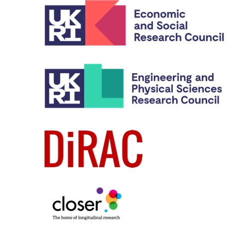

The project was conceived as a collaboration between Jon Johnson at CLOSER & Dr Suparna De at the University of Surrey, to investigate the intersection of metadata annotation in the social sciences and machine learning.
We aim to disseminate our findings to the Computer Science, Social Science and Metadata communities at conferences and in journals, so that these communities can gain a better understanding of the subjects under consideration and the benefits cross-discplinary collaboration.
We secured a small grant from ESRC in 2021 to look at extraction of metadata from social science questionnaires, this was supplemented by a grant from DIRAC to look at predicting concepts from question text, which is related to an adjacent problem in astronomy - it produces a large amount of unstructured text than would benefit from conceptual classification
DIRAC supported further work to look at more sophisticated models for concept prediction.
This project is funded by UKRI through the ESRC Future Data Service Program and brings together CLOSER, UK Data Service (UKDS), the Computer Science Department at the University of Surrey, and the Scottish Centre for Social Research (ScotCen) to generate metadata which is FAIR ready and can be utilised by these emerging data services.
We will be bulding on the pilot projects successes and learning to overcome the barriers. More details on the METACURATE-ML project page
Further funding by UKRI through the EPSRC AI for Science Program from October 2025, will allow us to start utilising the insights gained from the program of Computer Science research.
